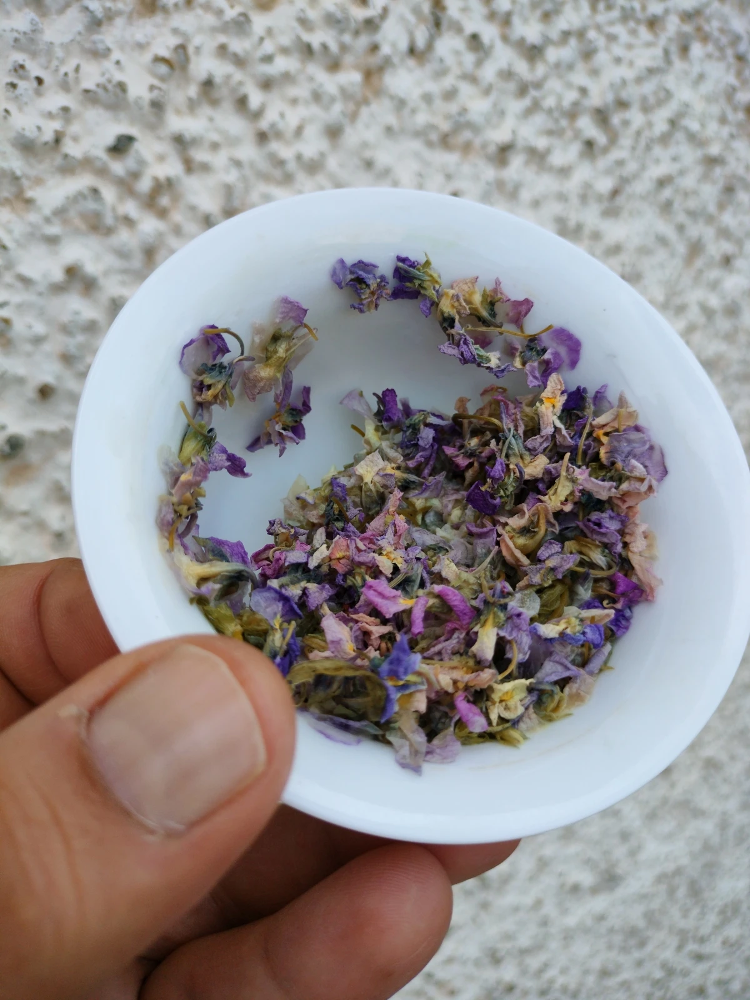
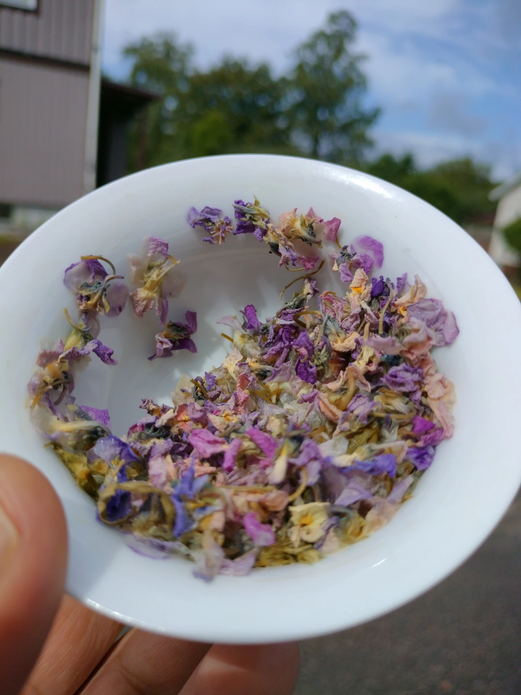
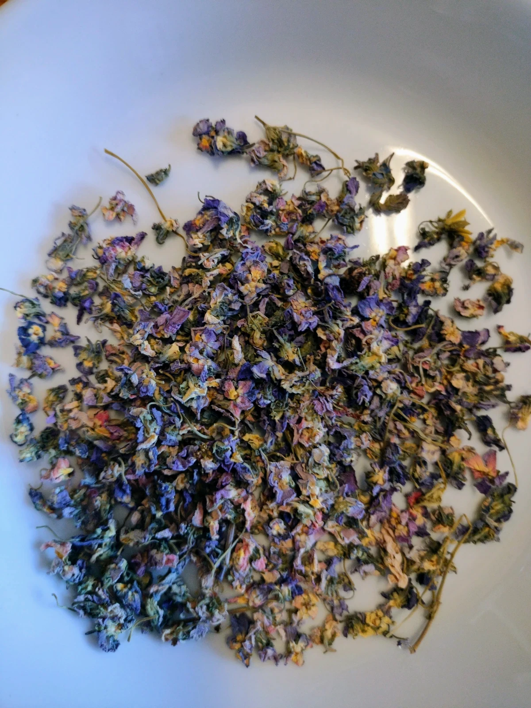
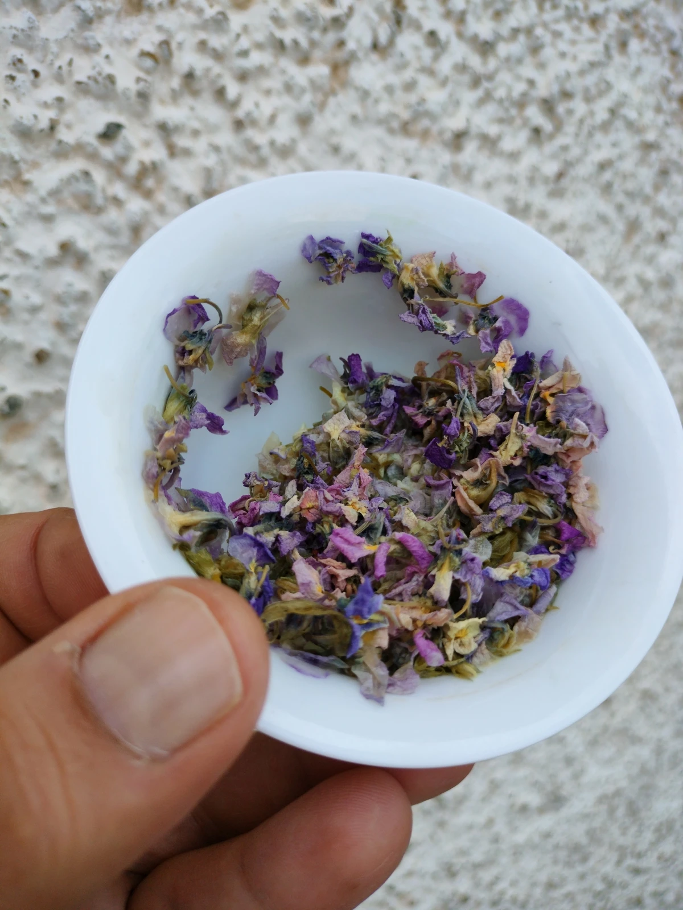
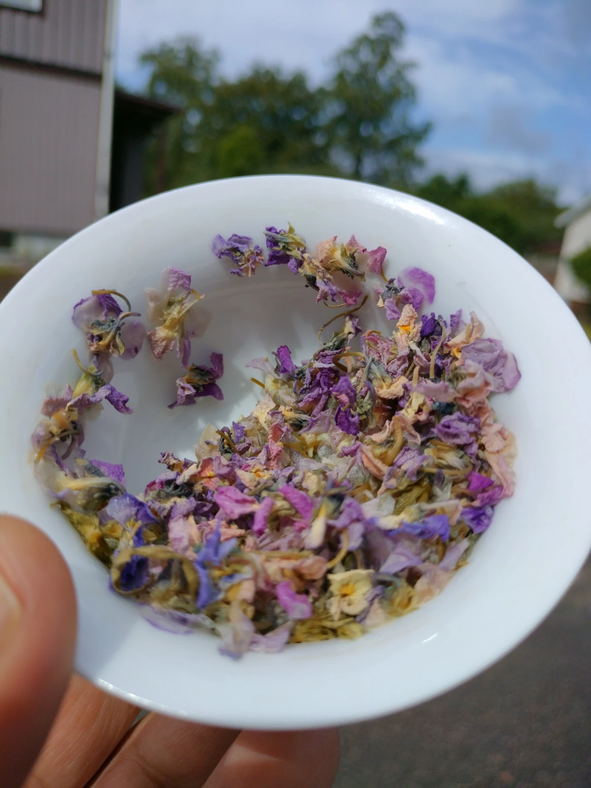
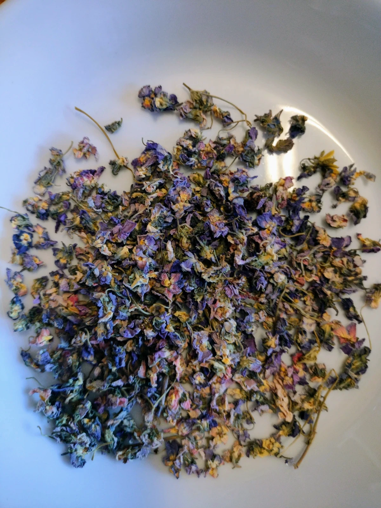

Bilder
Speglar och minnen
 





Fakta
Vad som är sant i dagsljus
- Ursprung: Tyskland
- Producent: Tea & Coffee Factory
- Batch: AB00439 · Lager: 900 g
- Förpackning: Återvinningsbart papper
- Förvaring: Torrt, mörkt, lufttätt
- Pris: 25 kr/g (20 kr/g vid köp ≥ 500 g)
- Korta smaknoter: Vårgrön örtighet, rund varm viol, lätt sötma, silkeslen textur, lång len eftersmak.
- Härkomst: Tysk jord och stilla vindar.
- Händerna bakom: Tea & Coffee Factory – vakna förvaltare av blad och blom.
- Tecken: Batch AB00439 · Förråd: 900 g i välsignat mörker.
- Följe: Papper som återföds när tiden vill.
- Vila: Torrt, skuggat, tillslutet – där aromen håller vakttjänst.
- Värde: 25 kr/g (20 kr/g när mängden når 500 g och mer).
- Toner: Grönskans första suck, varm viol, stilla sötma, silkestyst textur, eftersmak som dröjer som en viskning i en gammal sal.
🚚 Välj frakt
🚚 Val av vägar
Välj ett alternativ. Exakta priser för EU/internationellt beräknas via Sendcloud i nästa steg.
Välj din väg. Kostnaden räknas i nästa led, efter kartornas vilja.
📦 Välj mängd
📦 Mått och måtta
Enhetligt pris: 25 kr/g (20 kr/g vid köp ≥ 500 g).
Priset håller sin form: 25 kr/g (20 kr/g när vikten väger tungt, 500 g och uppåt).
Om teet – sensorik & karaktär
Teets väsen – läsning i värme och vatten
De torra violblommorna är små, täta knoppar på 2–3 millimeter – nyanser av lila som bryts av med gröna och gula fästen. När du öppnar förpackningen möts du av en stillsam, grön örtighet där en varm violton redan viskar om vad som väntar. Vid bryggning – 1 g per 100 ml, 85 °C, 10 minuter – sväller knopparna mjukt och färgerna lättar mot lavendel; de gröna och gula delarna blir transparenta, nästan ljusa som glas. Doften skiftar till mer vegetabilisk grönhet, medan violens värme ligger kvar som en låg, rund basnot.
I koppen är vätskan klar och guldskimrande, inte lila utan bärande på ett milt mysterium. Texturen är elegant och silkeslen; en diskret viskositet som bär smakerna över tungan. Smakbilden är finstämd: vårgrön örtighet möter en varm, rund viol som aldrig blir parfymerad utan förblir behärskad och lyxig. En lätt sötma håller helheten samman. Eftersmaken är lång och len – en blommig viskning som dröjer sig kvar, och i den tomma koppen stannar en ren violton kvar som ett eko av något stillsamt.
Serveras med fördel till smakerna du finner på en sushitallrik: fet fisk, sälta, inlagd ingefära och den klibbiga umamin från riset. Alternativt till något sött och knaprigt – som baklava – där teets runda blomma lyfter både honung och nötter utan att tävla.
Bryggtips: 1 g per 100 ml · 85 °C · 10 min. Justera tid/mängd efter önskad intensitet. Förvara torrt, mörkt och lufttätt.
De torkade violerna ligger som små sigiller, 2–3 millimeter, lila med gröna och gula fästen – väktare av en varm, låg ton. När du bryter förseglingen stiger grönskans ande stilla upp. Vid bryggning – 1 g per 100 ml, 85 °C, 10 minuter – sväller knopparna som om de mindes en vår. Färgerna ljusnar mot lavendel; fästena blir nästan glaslika. Doften vandrar mot växtens djupare kammare, och violen bär på värme som en runa nära elden.
I koppen: klart guld, ett milt mysterium. Texturen är silkesvävd; bär smakerna över tungan som en tyst procession. Tonerna är finlagda: grönskans första suck möter en rund, varm viol som aldrig blir parfym – bara närvarande och ädel. En lätt sötma håller kretsen sluten. Eftersmaken dröjer, som en viskning som vet vägen tillbaka. I den tomma koppen stannar ett eko – rent, violett, och vänligt.
Para med tallrikar där fett, sälta och inlagd ingefära spelar – sushins karta – eller med något sött och knaprigt som baklavas lager, där honung och nöt får bäras av blomman utan strid.
Bryggning: 1 g per 100 ml · 85 °C · 10 min. Justera efter hjärtats tycke. Vila teet torrt, mörkt, tillslutet.
🩺 Hälsopåverkan – vad säger källorna?
🩺 Om verk och verkan
Sammanfattning: Torkade blommor av Viola odorata förekommer i traditionella örtbeskrivningar för hosta och luftvägar, lugn/sömn, mild inflammation samt hudbesvär. Den moderna forskningen är begränsad och resultaten varierar mellan studier. Använd inte som medicinsk behandling; se detta som en kulinarisk och sensorisk upplevelse. Rådgör alltid med vård vid frågor om hälsa.
- Luftvägar & hosta: I traditionella sammanhang har viol använts i teer och siraper som ett mildrande inslag. Vetenskaplig evidens är inte entydig.
- Lugn & sömn: Förekommer i folklig användning för att komma till ro. Vetenskapliga data är begränsade; effekten kan vara subtil och subjektiv.
- Inflammation/antioxidativt: Vissa laboratoriestudier påpekar möjliga antioxidativa/antiinflammatoriska mekanismer, men kliniska slutsatser är osäkra.
- Hud: Traditionellt omnämnt i salvor/utvärtes bruk. Kliniskt stöd är begränsat.
Källkritik: Många artiklar på nätet återger traditioner utan primärkällor. För en översikt av publicerad forskning, se sökresultat för “Viola odorata” på PubMed.
Viktigt: Drick inte teet under graviditet/amning eller tillsammans med läkemedel utan att rådgöra med vården. Avbryt vid obehag eller allergiska reaktioner.
Sammanhållning: Viola odorata nämns i gamla växtböcker för luftens vägar, vila och hudens lugn. Den moderna kunskapen är tunnvävd och skiftar. Detta är ingen medicin – det är en smaklig rite. Fråga vården när du tvivlar.
- Andens gång: Siraper och teer i traditionen; dagens vetande är ännu oense.
- Vila: Folklig användning för ro; effekten är stilla, personlig.
- Eld & rost: Laboratorier ser spår av skydd, men vägen till människa är oklar.
- Hud: Gamla salvor nämner viol; bevisen är få.
Vägledning: Sök källor som bär ljus. PubMed samlar skrifter.
Varsamhet: Undvik under graviditet/amning eller med läkemedel utan råd. Avbryt vid minsta dissonans.
🧠 Andra som skriver om detta, skriver…
🧠 Röster i bibliotekets skugga
En genomgång av källor om Viola odorata visar traditionell användning vid hosta, hudbesvär och oro. Evidensläget är blandat: många bloggar lyfter fördelar utan primärkällor, medan vissa studier antyder antioxidativa effekter. Slutsats: använd med nyfikenhet – inte som medicin – och var källkritisk.
Läser man i katalogens marginaler finner man att violen tjänat hosta, hud och ro. Orden är många, bevisen tunnare. Kliv varsamt: pröva med nyfikenhet, inte som bot. Låt källkritiken vara din lykta.
❓ Vanliga frågor
❓ Frågor som återkommer i cirkel
Hur brygger jag te på torkade violblommor?
Är produkten ekologisk?
Hur ska jag förvara blommorna?
Hur många koppar får jag per gram?
Vilken hälsopåverkan har violblommor?
Hur läser jag teet?
Är odlingen högtidlig?
Hur låter jag aromen vaka?
Hur många koppar ur vikten?
Vad säger örten om hälsa?
🗺️ Odlingsregion
🗺️ Platsen där vinden minns
📦 Frakt & leverans – policy
📦 Hur varor vandrar
- Sverige: 49 kr · Fri frakt över 500 kr.
- EU/Internationellt: Dynamisk frakt via Sendcloud (beräknas vid beställning). Fri frakt över 1000 kr.
- Spårning: Ja, spårad frakt som standard.
- Hanteringstid: 1–2 arbetsdagar. Skickas från Ryd, Tingsryds kommun.
- Sverige: 49 kr · Fri frakt över 500 kr.
- EU/Bortom: Beräknas av tjänsten i nästa steg; fri frakt över 1000 kr.
- Spår: Varje paket bär sin runa.
- Tid: 1–2 arbetsdagar innan resan börjar. Avsänds från Ryd, Tingsryds kommun.
↩️ Returer & byten
↩️ När smaken väljer annan väg
“Didn’t love it? Give it to someone who might!”
“Delad växt – delad glädje.”
- Ångerrätt 14 dagar. Produkten måste vara oöppnad.
- Kund står för returfrakt. Vid godkänd retur: återbetalning eller tillgodohavande.
- Kontakta oss innan retur: support@driedvioletflowers.com
- 14 dagar att låta hjärtat tala. Förseglad vara kan vända åter.
- Du bär vägens kostnad. Vid godkänd återkomst: återbetalning eller tillgodohavande.
- Sänd bud före sändning: support@driedvioletflowers.com
💳 Betalning & säkerhet
💳 Köpeband och beskydd
- Flöde: Välj frakt + storlek → klicka “Skicka betalningslänk” → ange e-post + adress → vi mejlar unik Revolut-betalningslänk.
- Efter betalning: Vi packar (vi filmar gärna din order) och skickar spårbart från Ryd, Tingsryds kommun.
- Säkerhet: Betalning sker på Revoluts säkra sida. Vi lagrar inga kortuppgifter.
- Rit: Välj väg och mängd → be oss sända en länk → du fyller namn och härbärge → Revolut öppnar porten.
- Efteråt: Vi packar under god blick (vid önskan på film) och sänder spårbart.
- Beskydd: Betalning sker på Revoluts sida. Vi håller inga korttalismans här.
Om oss
Vilka vi är när ljuset skiftar
Vi handlar delikatesser, teer, kryddor och liknande av särskilt hög kvalitet – ofta i begränsade mängder som skiftar med säsongen. I över 20 år har vi valt hantverket framför det massproducerade, och byggt ett nätverk av likasinnade odlare och förädlare. Genom sidor som denna vill vi låta fler ta del av sådant vi själva uppskattar: små partier, stor omsorg, genuin smak.
Om du, liksom vi, är nyfiken på det där lilla extra – prenumerera gärna på vårt nyhetsbrev. Vi hör av oss när vi hittar något nytt som förtjänar din uppmärksamhet.
Vi söker och samlar det som bär omsorg och smakens sanning. Små skördar, stor varsamhet. I två decennier har vi vandrat där händerna arbetar långsamt. Här delar vi fynd som vill delas.
Om du lyssnar efter sådant som viskar – skriv din adress i rutan. Vi kallar när något nytt vill mötas.